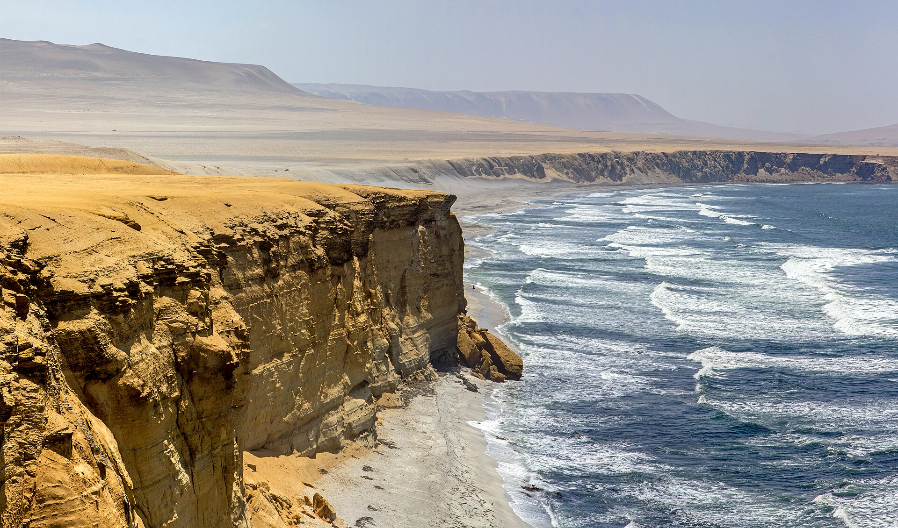
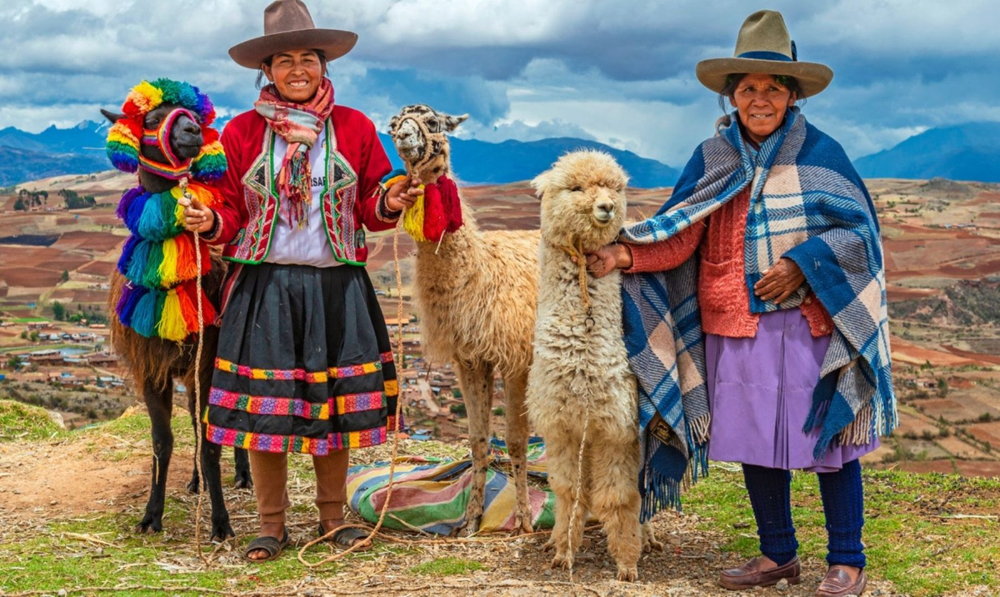
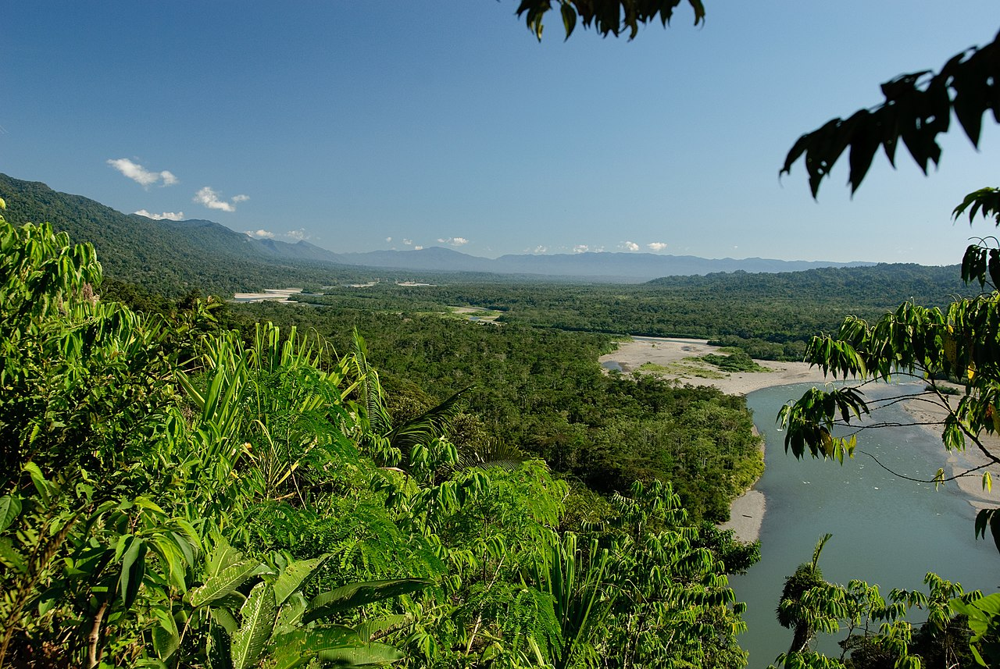

| Коста |  | Коста — прибрежный засушливый регион Перу, узкой полосой протягивающийся между высокогорными Андами и побережьем Тихого океана. Количество осадков составляет от 2–3 мм на юге до 300 мм на севере. Несмотря на то, что этот регион испытывает нехватку питьевой воды, здесь проживает большая часть населения — 58 %. Крупнейшими городами являются Лима, Трухильо, Чиклайо и Пьюра. Перуанское побережье ровное, с небольшим количеством заливов, гаваней, бухт и полуостровов. Склоны Анд в некоторых местах подходят к океаническому побережью вплотную. На севере рельеф косты равнинный. Климат определяется холодным Перуанским течением, задержкой влажных воздушных масс Андами с востока и влиянием Эль-Ниньо. В этом регионе наблюдается высокая влажность, облачность и большое количество туманов на побережье, несмотря на низкое количество осадков. Коста имеет малое количество растений, которые представлены ксерофитами и колючими кустарниками. Также есть территории с несвойственным косте климатом: например, заповедник Ломас-де-Лочай[исп.], где сформировалась уникальная флора, приспособившаяся к местным климатическим условиям. |
| Сьерра |  |
Сьерра — горный регион страны, характеризующийся выраженной высотной поясностью и природным разнообразием. Данное разнообразие является результатом субдукции океанической плиты Наска под Южно-Американскую плиту. На всем протяжении Сьерры встречается большое количество вулканов, в том числе действующих. На юге горная территория широкая, в центре находится высокогорное плато Альтиплано, его средняя высота — 3800 метров. Далее на север горы сужаются и на крайнем севере уже представляют собой линейные горные хребты. Природные зоны сменяются с запада на восток: от сухих горных скал через высокогорные пуны с ксерофитными кустарниками к высокогорным и амазонским тропическим лесам. В Сьерре проживает 8,3 млн жителей — 28 % населения страны. Также в данном регионе проживают некоторые коренные народы — кечуа и аймара; здесь же находился центр средневековой Империи инков. Однако в последнее время численность населения в Сьерре сокращается (более чем на 500 тысяч человек за 10 лет), хотя ещё в 1940 году здесь проживало 65 % населения страны. Крупнейшие города: Арекипа, Куско, Уанкайо, Хульяка. |
| Сельва |  | Сельва — малонаселенный регион, в котором расположены дождевые тропические леса Амазонской низменности. Климат тропический, влажный. Количество осадков — до 3200 мм. В этом регионе большое видовое разнообразие флоры и фауны. Плотность населения низкая, однако постепенно увеличивается за счет добычи нефти и газа. Крупнейшие города: Икитос, Пукальпа, Тарапото. |